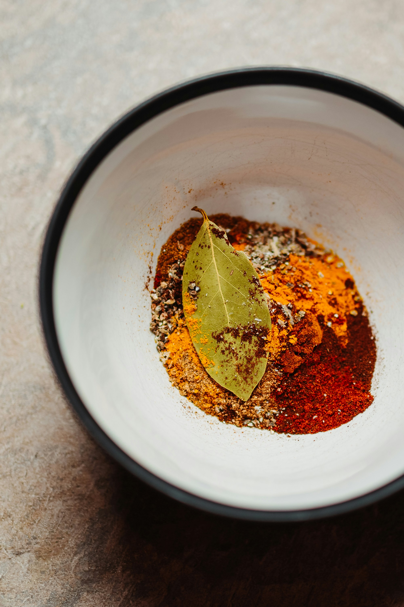

;
;
Ingredients
- 2.5 dl Bulgur.
- 1 Onion
- 3 Garlic cloves (or as many as your heart desires!).
- 400 grams Crushed tomatoes.
- 1.5 dl Red lentils.
- 2.5 dl Cream/Coconut milk/Cheese or whatever you have at home that will add a bit of thickness to it.
- 2.5 dl Water.
- 100 grams Spinach.
- 2 table spoons Freshly cut ginger.
- 2 table spoons Garam masala.
- 2 tea spoons Black pepper.
- 2 tea spoons Turmeric.
- 1 tea spoon Cumin.
- 1 tea spoon Cinnamon.
- Cooking oil.
Let's get cooking!
- Start by chopping up the onion, garlic, and ginger.
- Put the onion and garlic into a pot. Pour a thin layer of cooking oil into the pot and set it to medium heat. Make sure to stir occasionally so that the onion does not get burnt.
- Start boiling water in another pot and then add the bulgur. Cook it as you would normally.
- Prepare the spices by putting them on a plate or in a bowl. ;
- Once the onion and garlic are almost done push them to the side to make room for the spices. Pour the spices into the oil and stir them around so that they get soaked in the oil. Let them fry together with the onion and garlic for a minute.
- Add the crushed tomatoes, lentils, water, ginger, and cream or similar substitute. A tip is to pour the water into one of the containers to get the last bit of tomatoes or cream out. Stir the pot so that there is an even distribution of the ingredients.
- Bring it to a boil and then lower the temperature a bit and let it cook under a lid for about 18 minutes.
- The dish is done when the consistency of the dish is less liquidy and more creamy.
- Before serving, add the spinach leaves and stir around the pot. If you are planning on keeping some for another meal I recommend that you do not add the spinach leaves directly to the pot and instead add them when you serve the dish. The spinach leaves do not do well in the fridge after being cooked!
- Serve together with the bulgur and enjoy a health and tasty vegetarian meal!